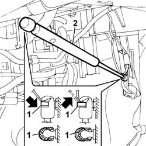

7025B26 Boot LID LIFTING DEVICE (one), left or right - R.R.
- Path
- Procedures > 70 FITTINGS > 7025 COMPARTMENT LIDS > 7025B BOOT LID > 7025B26 Boot LID LIFTING DEVICE (one), left or right - R.R.
- Kind
- repair procedure (removal / refitting; the operation number is the code)
- Applies to
- all engines; all production periods
- Interactive page
- https://sloeber94.github.io/elrnDB-lThss/en/#/80238
Applies to: all engines; all production periods
 Removing
Removing
 Refitting
Refitting- Open the boot lid.
See in Op. 7040B10 LOAD CARRYING COMPARTMENT LINING - R.R.
- Carry out the operations described below to remove the left lifting device.
See in Op. 7040B12 Luggage compartment/load platform left SIDE LINING - R.R.
-
- Carry out the operations described below to remove the right lifting device.
See in Op. 7040B17 Luggage compartment/load platform side trim flap (one) - Replace
-
See in Op. 7040B13 Luggage compartment/load platform SIDE LINING - R.R.
-
Carry out the operations described below to remove both lifting devices.
- Gently release the upper luggage compartment lining.
1. Using a screwdriver, release the retaining springs from both ends (without removing them).
2. Remove the lifting device.

Applies to: all engines; all production periods
Refitting
Removing- Check that the lifting device is not damaged.
- Refit the lifting device press-fitting the ends of the securing pins.
- Fit the retaining springs on both ends.
- Check the operation of the lifting device.
- Reposition the upper luggage compartment lining.
- Carry out the operations described below to fit the right lifting device.
- [7010B13]
See in Op. 7040B17 Luggage compartment/load platform side trim flap (one) - Replace
-
- Carry out the operations described below to fit the left lifting device.
See in Op. 7040B10 LOAD CARRYING COMPARTMENT LINING - R.R.
- Close the boot lid.